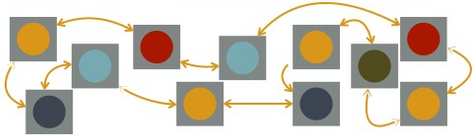

Introduction:
The microservice architectural style is an approach to developing a single application as a suite of small services, each running in its own process and communicating with lightweight mechanisms, often an HTTP resource API. These services are build around business capabilities and independently deployable by fully automated deployment machinery. There is a bare minumum of centralized management of these services, which may be written in different programming languages and use different data storage technologies.

SOA:
It is SOA, but different implementation approach.
Classic SOA:
Integrates different application as a set of services.
- Heavy-weight
- Orchestration
- Intelligent Communication Layer
- ESB
- WS*/SOAP
- License/driven
Target Problem: Integrate (legacy) software.
Microservices:
Architect a single application as set of services.
- Light-weight
- Chreography
- Dump Communication Layer
- HTTP/REST/JSON
- Intelligent services
Target Problem: Architect new business platform
Types of scaling:
Horizontal
Monolithic
More App server instances connected to single database.
Vertical
Monolithic
Increase the computing power of the machine, increase the system hardware configuration.
Data
Monolithic
Similar to Horizontal, but stores the segment of data in different database base instance based on the app server.
Functional
Micro-services
Separate the services as container based with respect to functionality and it may use own database.
Team
Micro-services
Separate team will be responsible for a functionality or a service and made deployment easy as it balances it out with different teams.
Why different from SOA & benifits:
Monolith:
- Hard to understand and modify.
- Large code base
- Overloaded IDE
- Overloaded Webcontainer
- Development slows down
- Small change-big impact
- Any change requires full rebuild, test and deploy.
- Impact analysis is huge effort, and takes long time.
- Obstacles for frequent changes and deployment.
- Big risk of re-write
- No hard module boundaries.
- Quality and modularity breaks down over time, this enforces eventual need for re-write.
- Long term commitment to technology stack
- Change or try-out new technology implies re-write.
- Re-write = complete re-write
- No partial re-write
- No hard module boundaries.
- Little resilience to failure
- Failure in monolith brings the app server down.
- Scaling can be difficult
- Mostly Horizontal scaling, many load balanced instances.
- Hard to scale to data growth cope with all data.
- Different components have different resource needs.
- Scaling development implies coordination overhead.
Microservices:
- Simple to develop
- Simple to deploy
- Simple to scale
- Small and focused on 1 capability
- Easier to understand
- IDE and deployment faster for 1 service
- Independent
- Release and deployment
- Scaling
- Development
- Loosely Coupled
- Through lightweight communication.
- Fault Isolation vs bring all down.
- Allows try-out of new technologies.
- Re-write can be limited to 1 service
- Impact analysis stops at boundary
- Provide firm module boundaries with explicit interface!
- Less risk on re-write
- Harder to violate boundary in development.
- Decentralized choreography
- vs central orchestration.
- vs central point of failure.
- Decentralized data
- Poloygot Persistence - Using different database for different services or container.
Why evolving architecture:
- Key (business) drivers guide architectural decisions.
- Micro-services are organized around business capabilities.
- Postpone decisions to Last Responsible Moment.
- Micro-services allow delay of scaling and technological decisions.
- Architect and develop for Evolvability
- Micro-services support evolution in technology, scaling, and features.
Functional decomposition of business domain
- Functional decomposition is more important to design a corret microservices.
- It is always safer to start with a functionally well decomposed monolith and evolve it to a microservices architecture when the need arises.
- Refactoring the initial functional decomposition will be easier in a monolith
- rewriting failure scenario's
- decentralised data
- service contract redesign.
Incorrect functional decompositions:
This leads to Leads to higher coupling between services, and most of the microservices architectural benifits are lost
- Harder to functionally scale the application.
- Error will propagate through multiple services
- Graceful degradation will be harder to achieve
- Team development overhead
- T-scaling becomes harder.
- Large communicational overhead between services.
- Large overhead in releasing/deploying business features.
- Refactoring to correct decomposition is costly.
Domain driven design:
Tackling complexity by abstracting the business domain concepts and logic into a domain model and using this as a base for software development.
Bounded contexts:
Domain driven design deals with large complex models by dividing them into different functionally bounded sub-domains and explicitly describing the interrelations between these sub-domains.
Ex:
Functional decomposition
Bounded Contexts
Apply Services to bounded contexts
Challenges & Communication:
- Operational Challenge
- Complex Runtime: many moving parts
- Keep releases and deployments manageable.
- Requires high level of automation is needed.
- Service monitoring is required.
- Configuration management becomes more complex.
- Keep releases and deployments manageable.
- Complex Runtime: many moving parts
- Distributed Development
- Services are deployed on multiple instances
- Testing effort becomes greater
-
- Distributed architectural properties to consider.
- Communication between services
-
- handling failures of components.
-
- decentralized data
- Each service has its own database - loose coupling.
- Might even be another database technology.
- Data duplication between services might be required to ensure loose coupling.
- When implementing use cases spanning multiple services:
- Distributed transactions
- data is always consistent
- reduces system availability, tightly coupled services.
- has fallen out of favor in modern stacks (REST, NoSQL)
- Eventual consistency
- Use a message broker to publish use cases to other services
- decouples producers and consumers (services) of events.
- Improves availability.
- Trade off between availability and data consistency
- application needs to be able to handle eventually consistent data.
- Use a message broker to publish use cases to other services
- Network properties
- Synchronized HTTP-based
- easy
- firewall friendly, works across the Internet
- doesn't support publisher-subscriber patterns
- client and server must both be available simultaneously.
- client needs to know host and port of server
- Asynchronous non-blocking
- Client doesn't block calling thread (allows for parallelism)
- client and server still must be available simultaneously
- client needs to know host and port of server
- Asynchronous Messaging
- Through broker...
- decouples message producers from consumers
- broker can buffer messages
- supports a variety of communication patterns
- broker is another moving part (adds complexity)
- request-reply communication patters is not a natural fit.
- Through broker...
- Handling failures
- Services can fail at any moment.
- Design services to handle these kind of failures.
- Fallback message queue.

-
- Pre-service thread pools.
- Synchronized HTTP-based
- Distributed transactions
- decentralized data
- Distributed architectural properties to consider.
- Services are deployed on multiple instances
- Minimizing Communicational overhead
- Communication between services is reduced.
- when functional decomposition is done right.
- when service size isn't too small.
- Communication between services is reduced.
-
- Executing service calls in parallel reduces impact of communication overhead
- Reduce unneeded network usage by using circuit breakers
- Wrap a protected function in a circuit breaker
- Monitor protected function for failures.
- The circuit breaks when a predefined threshold of fails is reached
- All future calls to the function go to fallback until the circuit is restored.
- Reduce communication between clients and services with an API gateway
Using API gateway, the services can be routed.

Microservices Implementation stack:
- Dropwizard
- Sprint boot
- Logging
- Loggly
- log stash
- splunk
- Deployment
- Docker
- Openshift-geard
- Apache - Mesos
- Spotify - Helios
- Netflix - ribbon
- Netflix - eureka
Useful links: